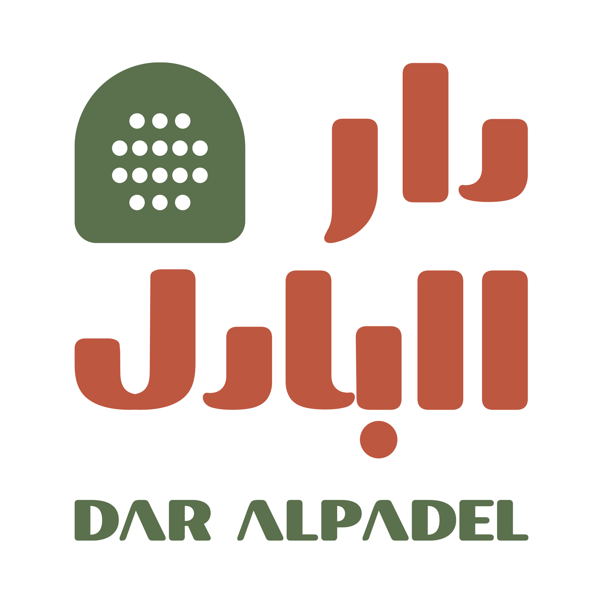

من أول ضربة متقنة إلى أول نقطة تحسمها بعد ارتداد الكرة عن الزجاج، ستكتشف أن البادل تجمع المتعة السريعة بالعمق التكتيكي، وتمنحك سببًا جديدًا للتطور في كل مباراة.
قواعدها واضحة وبدايتها سهلة، ومع تطور مستواك تتعلم قراءة الزجاج، واختيار زاوية الضربة، والسيطرة على الشبكة، والتحرك بانسجام مع شريكك.
تبادلات سريعة، وارتدادات مفاجئة، ونقاط تبقيك حاضرًا حتى آخر كرة.
للمبتدئ، اللاعب الاجتماعي، وصاحب المستوى التنافسي.
في البادل، شريكك جزء من كل نقطة؛ تتحركان معًا، وتغطيان المساحات، وتتخذان القرار في لحظة واحدة، ثم تحتفلان بالحماس نفسه بعد كل نقطة جميلة.
كل نقطة تختبر تمركزك، رد فعلك، وصبرك. متى تتقدم إلى الشبكة؟ متى ترفع الكرة فوق الخصم؟ ومتى تتركها ترتد عن الزجاج؟ هذه القرارات الصغيرة هي ما يجعل كل مباراة مختلفة.